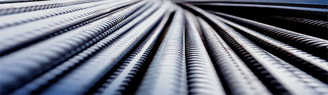
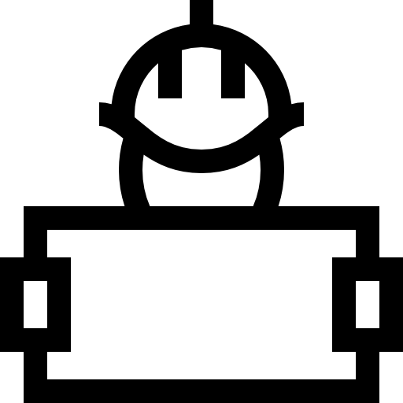
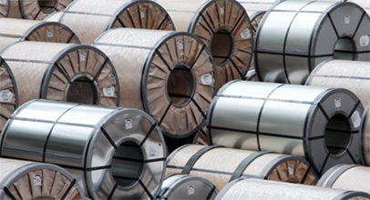
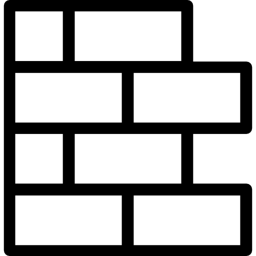
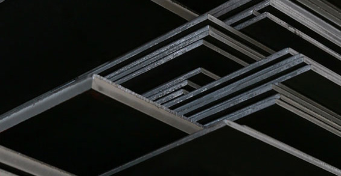

제품 소개
철근
철근은 건축용 자재로 쓰이는 원형봉강과 형상이 동일하며 표면에 축 방향의 돌기와 횡 방향으로 일정한 간격의 마디가 있어 콘크리트 부착력이 강하게 만들어진 제품입니다. 주로 건축, 토목구조용으로 많이 쓰이며 포스코엠텍은 D10~57mm에 이르는 다양한 철근을 생산하고 있습니다. 포스코엠텍은 구조물의 안전과 품질 향상을 위해 고성능, 고기능, 친환경 철근 제품을 개발 · 생산하고 있습니다. 특히 용접용 철근, 초고장력 철근(SD 500/600), 나사형 철근, 내진용 철근 등과 같은 고부가가치 제품의 판매를 확대하고 있습니다. 최근에는 저가 수입품 제품이 국내시장을 잠식하고 있음에도 불구하고 시장점유율을 확대해 나가고 있습니다.
- 용도
 빌딩
빌딩- 토목
- 원전
- LPG저장탱크
냉연
냉연은 열연을 상온에서 약 2mm 이하의 두께로 압연하는 공정으로 철강제품 중에서 가장 생산하기 어렵고, 높은 기술력을 필요로 합니다. 때문에 '철강제품의 꽃'이라고도 불립니다. 냉연강판은 두께가 얇고 표면이 미려해 우리 생활과 밀접한 자동차, 가전제품, 건축자재 등의 외판과 내장재로 사용됩니다. 포스코엠텍은 연간 600만 톤의 냉연강판 생산능력을 가지고 있으며 최근에는 세계적인 자동차 경량화 트렌드에 발맞춰 초고장력 강판과 같은 고부가가치 냉연강판 개발에 힘쓰고 있습니다.
- 용도
- 가전제품
 자동차부품
자동차부품- 덕트
- 방음벽
후판
후판은 일반적으로 두께 6mm 이상의 두꺼운 강판을 말하는 것으로, 두께 200mm 이상의 반제품 슬래브를 열간 압연한 후 냉각과 열처리 등의 후속 공정을 통해 만들어집니다. 후판은 재질에 따라 일반구조용, 용접용, 보일러용, 대(구) 경강 관용 등으로 규격이 정해집니다. 용도별로는 조선용, 보일러용, 일반 용접 구조용, 압력 기용, 송유관용, 바닥용 등으로 구분할 수 있습니다. 포스코엠텍은 연간 350만 톤의 후판을 생산할 능력을 보유하고 있으며 열처리설비 등 최신 설비를 운영하고 있습니다. 또한 국내 최초로 러시아, 프랑스 등으로부터 극저온 고성능 후판에 대한 선급인증을 받는 등 고품질 전략으로 고급 강후 판 시장을 적극적으로 공략하고 있습니다.
- 용도
 조선
조선- 해양플랜트
- 파이프
- 보일러